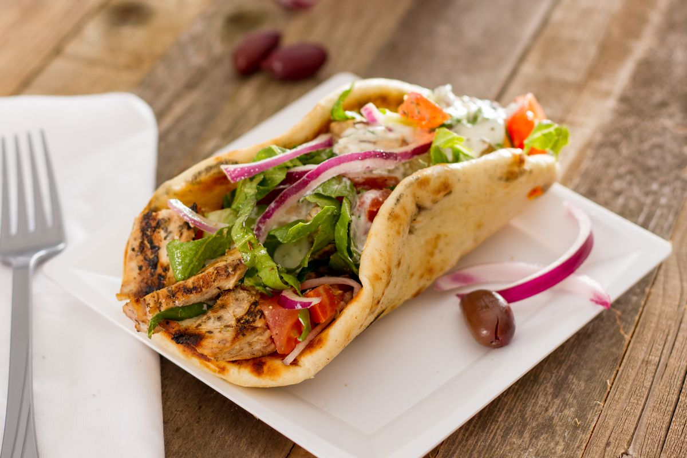

АРМЕНИЯ
В Армении это блюдо называется карси-хоровац (шашлык по-карски). Шашлык по-карски представляет собой большой кусок мяса на вертеле, с которого постепенно срезают кусочки по мере приготовления и заворачивают их а псацах (тонкий пресный листовой «лаваш»).
В Армении карси-хоровац (шашлык по-карски) часто готовят из баранины или свинины, маринуя мясо в специях и луке перед жаркой. Традиционно к шашлыку подают зеленый лук и толченый чеснок.

БЕЛЬГИЯ
В Бельгии используется название пита-дюрюм (фр. pita durum), или просто дюрюм (от тур. dürüm «завернутый»), если начинка завёрнута в тонкий лаваш, или просто пита (фр. pita), если начинка кладётся в половинку питы.
В Бельгии пита-дюрюм или дюрюм часто готовят с начинкой из курицы или говядины, приправленной соусом чесночного йогурта и свежими овощами, такими как помидоры и салат.
ГЕРМАНИЯ
В Германии используется название денер-кебаб (нем. Döner kebab), или просто Döner. Также используется название Schawarma. Иногда используется название дюрюм (от тур. dürüm «завёрнутый»), если начинка завернута в тонкий лаваш, встречается и название турецкая пицца (нем. Türkische Pizza).
В Германии денер-кебаб или Döner обычно подают в лаваше или в пите с добавлением соусов, овощей и жареных картофельных ломтиков. Один из популярных соусов для Döner - это соус чесночного йогурта.
ГРЕЦИЯ
В Греции (включая Крит) мясо, приготовленное на вертикальном вертеле, называется гирос, а начинённая этим мясом пита - гирос пита.
В Греции гирос часто готовят из свинины, курицы или ягненка. Он подается в пите с томатами, луком, соусом цезарь и тзатзики, который делается на основе йогурта с огурцом и чесноком.

ИЗРАИЛЬ
В Израиле для того же блюда используется название шаварма. Подается в лепёшке-пите или в тонком лаваше лафе. Коренные иерусалимцы называют лафу «эштанур». Любимые приправы хумус, тхина, камба» (жидкая приправа из маринованного манго), острый схуг. В израильской шаурме полностью отсутствуют молочные составляющие в любом виде из соображений кашрута.
В Израиле шаварма обычно готовится из курицы или говядины, маринуя мясо в специях и уксусе. Подается в лепешке-пите с добавлением хумуса, тхины, свежих овощей и острых соусов, чтобы придать блюду более яркий вкус.